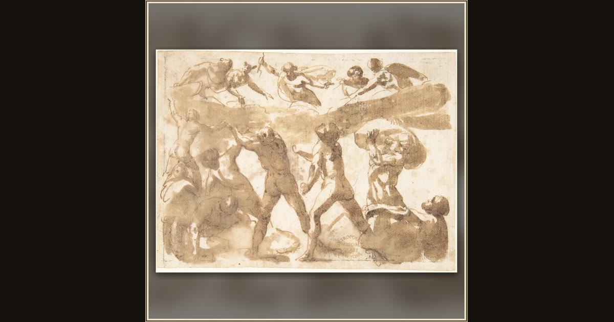

Battle of the Titans
attributed to Francesco Allegrini · 1624–63 · met
This pen-and-wash drawing attributed to Allegrini of the battle of the Titans shows giant nude figures straining upward against the gods in the clouds above, as both sides showed their might (675–679) Explore its place in Hesiod's Poems, Theogony, line 675.